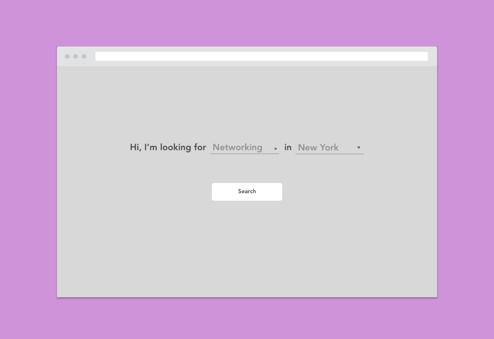

Femme Tech
Overview
About
In November 2018, I participated Hexagon's Hackathon, HexHacks. The challenge was Promoting Underrepresented Communities In Tech. Me and my teammates were grouped together to build a resource for women that are new to tech to help them discover events and communities within their area. My role was to create the wireframes of the app.The Focus
Build a resource for women that are new to tech to discover events and communities in their area.Duration
1 Day (November 3, 2018)Team Members
Jane Park, Chelsea Casareale, Caroline Lukins, Melissa Alzate, Annemarie Fulcer, Lynn Hwirin ParkMy Role
UX Designer: Competitve Analysis, WireframingProblem
For women just entering the tech industry, it can be difficult to find a community and the resources needed to succeed. New to the industry, most do not know what exists, where to start, or what terms to search for. Finding relevant and reliable information for women in one streamlined place can be very difficult and frustrating. Most companies are predominantly male-led and this can lead to feelings of intimidation. Ultimately, these issues can lead to the halting of professional growth of the individual, a factor contributing to imbalance of representation.Problem: Too many separate platforms


Problem: Too many buzzwords


Goal
With an overwhelming array of options, facets, and terms to go to. We try to narrow it down that here should be one hub that women can go to for getting involved.Research
User Interviews
We conducted informal interviews regarding the difficulty of finding events for women in tech, we came up with a persona to represent our user and her goals. Some of the themes that overlapped were:User Persona
After we gathered our data from the interviews, we created a user persona to fit those criterias.

Concept Design
Ideating
The approach is to have the search be more human than a generic search. The user response will be more receptive when the questions and results are phrased in human-like conversations.Search Filters
We started to brainstorm ideas on search filters, how would the user go about searching for their specific needs?
Primary Filters
Location
User input with autosearch and gelocation
Event Type (motivation)
Network
Work on my portfolio
Learn about industries
Develop my skill
Find mentorship
Perfect for
Recent grads
Landing first job
Working on my skills
Building a better portfolio
Looking for mentorship
Industry deep divind
Getting inspired
Secondary Filters:
Design: UI/UX Design, Visual Design, Graphic Design, Motion Design
Technical: Software Engineering, Front-End Developer, Back-End Developer, Full Stack Developer
Product: Product Management, Product Designer
Branding
Skills & Interest
Sort
By date
By size
By popularity (upvote function)
Visual Design
Sketching and Wireframes
After establishing the concept of the app, I started to sketch our wireframes.{kind=link}
Lo-Fidelity Mock Up

Click to view
The main page of the app. The search's is in a human-like greeting. The User can fill out what their needs are.

Click to view
Once the user selects what they want, it will generate a list of options based on their purpose and location.

Click to view
There is a filter option, where Users can fine-tune their search for more specificity.

Click to view
When the User selects which event they would like to attend, this page shows specific details of the event.
Take Aways and Improvements
Idea Viability
Technical RequirementsImpact
The improvements that we would have liked to add are features for a "Premium" membership. With that,
it would include a mentorship connection for
women in tech to start out.
I had a really good time participating in this Design Hackathon. It was really fun to get some hands on experience on how to
come up with a concept, then work on research, to execution on the design of the product with a team. With the limited amount of time we had,
it was hard to "trim down the fat" of the concept of this project. But given how much time was given to us, I think we were able to achieve our goal and create an MVP.
- Shop WIBO Staff Dashboard
- Punch Up
- Ouchie
- Photomatic
- Femme Tech